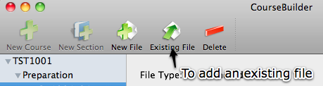
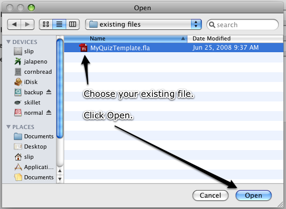
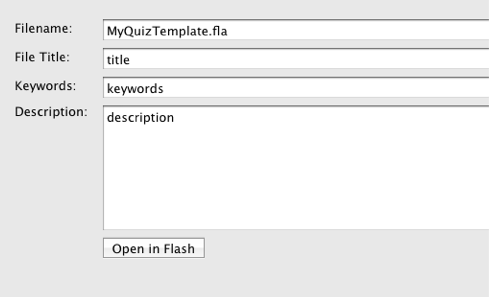

Adding an Existing File
If you already have an existing swf or fla which you would like to add to your course, no problem.

To add an existing file:
Click the Add Existing toolbar item.


Choose your existing file and add information.
Enter a File Title, Keywords and Description.